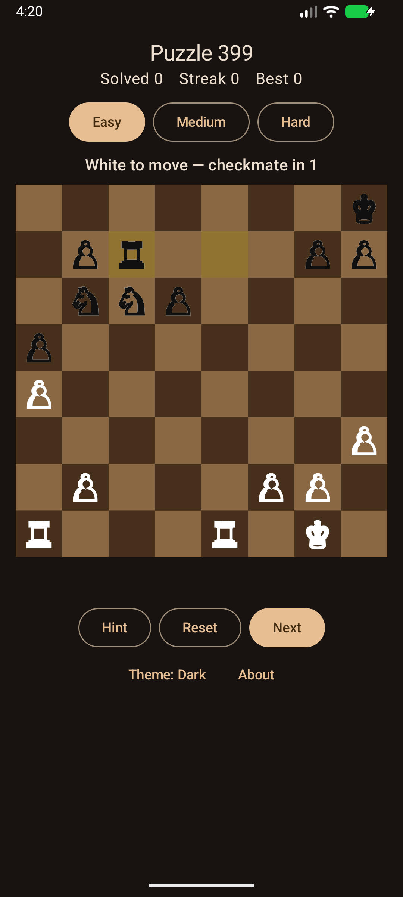

🧩
Real Lichess puzzles
Thousands of tactics sampled from the Lichess Open Database (CC0).

Solve thousands of real puzzles from the Lichess database on your Android phone. Find the best move — the rest plays itself.
Free & open-source · Android 7.0+ · no account, fully offline
No menus to wade through, no sign-up. Open the app and you are already solving.
Thousands of tactics sampled from the Lichess Open Database (CC0).
Each puzzle announces its goal — "checkmate in 2" or "win material". Spot the best move, then watch the opponent reply.
Easy, Medium or Hard — jump between rating bands with one tap.
Your solved count and streak are saved on-device, so you pick up where you left off.
No account, no network. Every puzzle ships inside the app.
Follows your system dark mode, or pick Auto/Light/Dark in the app. Night mode dims the board for comfortable play.
Move pieces by tapping squares or dragging — a smooth custom Compose board.
Apache-2.0 licensed. No ads, no tracking, ever.
A real game position appears with its goal — checkmate in 2, win material, or save the game. One side is to move.
Tap or drag the piece. A wrong move just lets you try again.
The opponent answers automatically until the puzzle is solved.
Solve the next one. Your progress is saved on-device.



A multi-module Kotlin project — a pure-JVM chess engine and a Jetpack Compose UI — with 100% test coverage. Read the source and build it yourself.